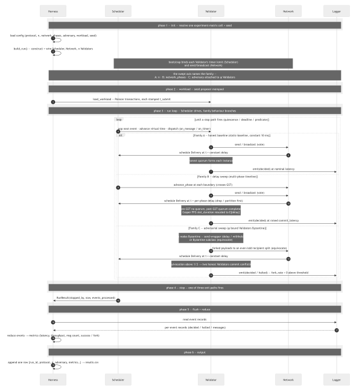
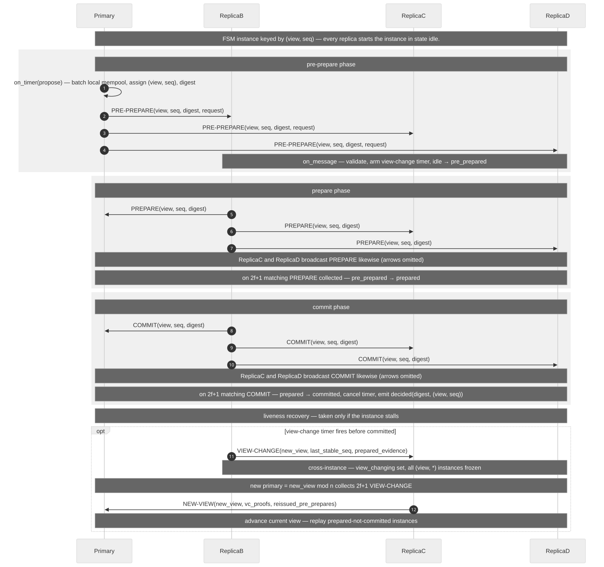
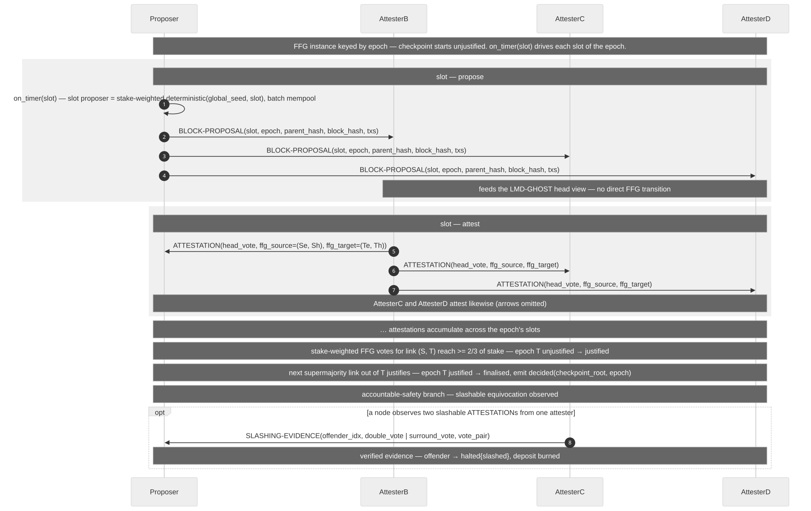

<!-- front_acknowledgments.md — acknowledgments front matter. Ports into../thesis-tex/MIT-thesis-template/acknowledgments.tex: copy the paragraph prose below into the chapter body, after \chapter*{Acknowledgments}. This is front matter, not wiki knowledge — it carries no wikilinks. Every TODO(human) marker MUST be resolved by the author before submission; the surrounding phrasing is a neutral scaffold only. -->
I am grateful to my thesis advisor, TODO(human: advisor name and title), for guidance and supervision throughout this work, and for the feedback that shaped its direction and methodology. I also thank TODO(human: committee members or thesis readers, with titles) for their time and comments on the work, and the faculty and staff of TODO(human: department or program name) for the instruction and support that made it possible.
I thank TODO(human: fellow students, collaborators, or colleagues) for the discussions and feedback that improved this thesis. This work was supported by TODO(human: funding source, fellowship, or grant number — delete this sentence if no such support applies), and I am grateful for the resources and compute that support provided.
Finally, I thank TODO(human: family members, partner, and friends) for their patience, encouragement, and support throughout my studies.
A Layer-1 (L1) blockchain maintains a replicated, append-only log of transactions across a set of mutually distrusting validators. Such systems are typically evaluated on two largely separate axes — throughput in their whitepapers and safety bounds in their proofs — but under network delay and adversarial pressure the two axes cease to be independent. At each height the validator set must agree on a single block; the protocol that produces that agreement is the consensus protocol, and the four families evaluated in this thesis differ in how they produce it.
Three foundational results bound what any such protocol can achieve. The Byzantine Generals Problem [1] establishes that deterministic agreement among n processes tolerating f arbitrarily-faulty participants requires n ≥ 3f+1. The Fischer–Lynch–Paterson impossibility [2] establishes that, under pure asynchrony, no deterministic protocol guarantees both safety and liveness in the presence of even one crash fault. Dwork, Lynch and Stockmeyer [3] supply the most influential relaxation: under partial synchrony, consensus is solvable for f < n/3. Together these results define the design space in which every deployed L1 protocol must sit.
The four families evaluated in this thesis correspond to four distinct points in that design space: PBFT-style, PoS-finality, Avalanche-style, and DAG-based. Each family selects a different combination of synchrony assumption, fault threshold, and finality regime; each pays a different primary cost.
PBFT-style protocols reach agreement through leader-driven, multi-phase voting among a fixed validator set, delivering deterministic finality at commit time at the cost of O(n²) message complexity that bounds the practical validator-set size. PoS-finality protocols separate block production from a stake-weighted finality gadget that confirms checkpoints across epochs, achieving deterministic finality at the cost of finality latency on the order of minutes. Avalanche-style protocols reach agreement through repeated random subsampling and metastable voting, achieving probabilistic finality with tunable confidence at the cost of giving up deterministic safety. DAG-based protocols decouple message dissemination from ordering by having validators continuously reference earlier vertices in a directed acyclic graph, achieving high throughput under good conditions at the cost of additional ordering-layer complexity and a higher per-validator memory footprint.
Layer-1 blockchains provide the settlement guarantees on which their users depend: the consensus protocol determines whether a transaction is final, whether the chain continues to advance, and whether two honest validators can ever commit incompatible histories at the same height. The choice of family is important in production. Ethereum is secured by a PoS-finality protocol [8]; Sui is secured by a DAG-based protocol [13]; Cosmos chains are secured by a PBFT-style protocol [6]; the Avalanche mainnet is secured by the Avalanche-style protocol from which the family takes its name [9].
These protocols have demonstrably exited their operating envelopes in production. Solana's mainnet has halted on multiple occasions — most visibly in September 2021 (a 17-hour stall under a flood of bot transactions), April 2022 (a 7-hour halt from validator memory exhaustion compounded by insufficient finalization votes), February 2023 (block-propagation saturation in the Turbine layer), and February 2024 (a 5-hour finalization stall) [18]. Ethereum's beacon chain experienced a 7-block reorganization in May 2022, attributed to a late block proposal that split validator views around the proposer-boost fork-choice rule [19], and a multi-epoch finality stall in May 2023 caused by attestation-processing pressure on consensus clients [20]. Cosmos Hub halted following its v17.1 upgrade in June 2024 [21]; Sui suffered a complete crash-loop network halt in November 2024 and a six-hour consensus divergence in January 2026 traced to an edge-case bug in commit processing [22]. These incidents do not invalidate the protocols' theoretical guarantees — they demonstrate that the conditions under which those guarantees hold are routinely exited in deployment. Isolating which condition triggers which failure, however, requires controlled measurement that live networks do not afford.
The primary literature evaluates each protocol under scattered, harness-specific conditions: each study fixes its own network model, fault assumptions, and workload, and varies one disturbance at a time. Live operation combines those disturbances rather than isolating them. Validators are geographically distributed; messages are delayed, reordered, and dropped; a sizable fraction of the active set is, at any given moment, slow, offline, or adversarial. The conditions under which a consensus protocol is tested most severely are exactly the conditions its publication benchmarks do not combine. Both the canonical taxonomic survey [14] and the methodological critique of Cachin and Vukolić [16] identify the absence of comparable stress-condition evaluation as the main obstacle to honest cross-family comparison. Combining those disturbances is exactly the condition under which performance and security cease to be independent variables.
The gap would be of academic interest only if performance and security remained separate. They do not. Under combined network delay and adversarial pressure the two become linked: a protocol that only slows under load may also miss finality, fork, or allow conflicting commits across honest validators. The performance–security coupling is invisible to benign-condition benchmarks. This thesis is motivated by that coupling, and by the absence of a unified harness in which it can be measured across the four families on matched assumptions.
This thesis investigates the comparative performance–security behavior of the four Layer-1 consensus families — PBFT-style, PoS-finality, Avalanche-style, and DAG-based — under controlled network delay and adversarial conditions, using a unified discrete-event simulator. The contribution is not a benchmark of production systems; it is a reproducible cross-family evaluation framework in which latency, throughput, communication cost, and the safety and liveness response to adversarial pressure are measured under matched assumptions. Performance is measured as commit latency, sustained throughput, and communication overhead; security as safety and liveness under adversarial pressure. The unified metric schema is defined in Chapter 3.
Concretely, this thesis extends the simulation-based, metrics-instrumented methodology of Gervais et al. [17], originally applied to Proof-of-Work, to PBFT-style, PoS-finality, Avalanche-style, and DAG-based protocols. The comparison is organized around the Pareto frontier of the performance–security tradeoff that each family traces under matched conditions, so that the question of whether any family dominates across all operating regimes can be answered from data rather than claimed from theory.
Evaluation is conducted at the message-passing level inside a discrete-event simulator.
Within scope are configurable network delay (constant, uniform, exponential, heavy-tailed); configurable packet loss; four Byzantine validator behaviors representative of those discussed in the primary literature, namely silent non-participation, delayed voting, equivocation, and selective dropping; and validator sets up to several hundred nodes.
Out of scope are Proof-of-Work as a subject of comparison (it appears only as a methodological precedent through [17]); Layer-2 protocols; deployment on testnet or mainnet; economic and incentive design; and the performance of cryptographic primitives.
Four assumptions frame the results. First, each family is represented by a deliberately simplified implementation; the simplification is intentional, since the aim is fair like-for-like comparison across families rather than the reproduction of any particular production codebase's throughput. Second, the network is idealized: delay and loss are configurable parameters, but TCP congestion control, kernel scheduling, and physical-layer jitter are not modeled. The abstraction level matches that of prior simulation studies of consensus. Third, the adversarial strategies evaluated are those most frequently discussed in the primary literature; attacks requiring specialized cryptographic or economic modeling are left to future work. Fourth, literature-reported figures are treated as order-of-magnitude sanity checks rather than as validation targets; the simulator's contribution is internal consistency across families under matched assumptions, not the reproduction of production throughput.
Simulation is chosen over testnet or live-network measurement for three reasons: reproducibility of seeded runs, the controlled isolation of one independent variable at a time, and a matched harness across all four families.
Five research questions structure the empirical evaluation. RQ1–RQ4 generate the data; RQ5 synthesizes it.
Each question is paired with a defined subset of the unified metric schema and with a defined independent variable in the experiment matrix.
The thesis makes four contributions:
The remainder of the thesis is organized as follows. Chapter 2 reviews the literature on Layer-1 consensus families and prior comparative evaluations. Chapter 3 describes the methodology: the system model, the four protocol implementations, the metric schema, and the experimental design. Chapter 4 presents the empirical results — baseline, network-delay, and adversarial experiments — answering RQ1–RQ4. Chapter 5 presents the cross-family Pareto synthesis that answers RQ5 and demonstrates the simulator's utility for protocol-level experimentation through a targeted enhancement (an adaptive timeout) compared against the baseline. Chapter 6 concludes with the findings, their limitations, and directions for further work.
Chapter 1 introduced the four Layer-1 consensus families this thesis evaluates and motivated, at a high level, the absence of a unified comparative evaluation from the existing literature. The present chapter develops that motivation at literature-review depth, supporting three claims on which the remainder of the thesis depends:
ε for Avalanche-style [9]; WAN-scale ktps and commit latency for DAG-based [11]–[13] — so the primary numbers do not cross family boundaries.Two scope notes pin the chapter. First, Proof-of-Work appears as a methodological precedent through [17] only; it is not a subject of comparison, consistent with the scope contract in Chapter 1. Second, the chapter surveys the literature on each family at the level of mechanism, guarantees, and documented adversarial weakness; the simulator-level mechanics of each protocol are the concern of Chapter 3.
The remainder of the chapter is organized as follows. §2.2 frames the consensus problem at the level of a replicated log and recalls the three foundational impossibilities every family inherits. §2.3 maps how those impossibilities carve out a four-region design space, summarized by Figure 2.1. §2.4 surveys each region in turn on a uniform skeleton, with Table 2.1 as the cross-family scorecard. §2.5 turns to the existing evaluations of those families and demonstrates, with Table 2.2, that the reporting vocabulary itself blocks comparative judgment. §2.6 states the resulting unified-harness gap and passes the reader into Chapter 3.
A Layer-1 blockchain is a replicated, append-only log of transactions maintained by mutually distrusting validators. At each height every honest validator must commit the same block; the mechanism producing that agreement is the consensus protocol. Block agreement is, at each height, an instance of the Byzantine Generals Problem [1]: a set of processes, some of which may behave arbitrarily, must converge on a single value despite contradictory messages. The classical distributed-systems literature already supplies the bounds within which any Layer-1 protocol must operate.
Three foundational results define those bounds. Lamport, Shostak and Pease [1] proved that a deterministic solution to the Byzantine Generals Problem requires at least 3f+1 participants, where f is the number of arbitrarily-faulty processes; this bound is the origin of the two-thirds supermajority recurring throughout the BFT literature. Fischer, Lynch and Paterson [2] showed that, in a purely asynchronous network, no deterministic protocol can guarantee both safety and liveness in the presence of even a single crash-faulty process. The FLP impossibility is not specific to malice: it forces every Layer-1 protocol to relax some assumption. Dwork, Lynch and Stockmeyer [3] supply the most influential of those relaxations: under partial synchrony — message delays are bounded but the bound is not known a priori — consensus is solvable for f < n/3.
These results jointly define the design space. Every Layer-1 protocol concedes along the synchrony axis (synchronous, partial-synchronous, asynchronous, or probabilistic), the fault-model axis (crash, omission, Byzantine, with stake-weighting where applicable), or both. Across the concession space, the 3f+1 quorum-intersection arithmetic recurs wherever a family preserves deterministic safety. The CAP theorem [18], projected onto blockchains, makes the operational consequence concrete: under partition, a chain must choose Consistency (PBFT-style and PoS-finality halt safely) or Availability (Avalanche-style continues with weakened guarantees); partition-tolerance is non-negotiable. The three properties expected of a consensus protocol — Agreement (no two honest validators commit different values at the same height), Validity (any committed value was proposed by some validator), and Termination (every honest validator eventually commits) — sit on top of the concession space and trade off against one another whenever the assumed model is violated.
No fifth foundational result permits a free lunch; every Layer-1 protocol begins by choosing which of the existing constraints to relax. The next section maps how the four families chose.
A 3f+1 quorum under partial synchrony is one viable point in the concession space, and the most direct one. PBFT [4] and its descendants HotStuff [5] and Tendermint [6] occupy it. Three other viable points exist, and the four families evaluated in this thesis sit at the four points respectively. Figure 2.1 maps the propagation from the Byzantine Generals Problem to the four families.
Figure 2.1 — From the Byzantine Generals Problem to the four families.

Source:wiki/diagrams/concepts/bft-families-tree.md · Mermaid flowchart TD · PDF
The three non-PBFT branches are best read as answers to the question of which assumption to loosen further once PBFT's partial-synchrony, 3f+1-quorum point has been fixed. PoS-finality retains 3f+1 and partial synchrony but adds an economic layer — accountable safety via slashing — converting the Byzantine fault model from an external assumption into a behaviorally disincentivized one [7], [8]. Avalanche-style abandons quorums altogether and replaces them with repeated random subsampling, accepting a non-zero safety-violation probability ε in exchange for asynchrony tolerance and per-validator cost independent of n [9], [10]. DAG-based protocols retain 3f+1 but separate the two responsibilities classical consensus bundles (data availability and ordering), routing the first to a DAG mempool and the second to a thin commit rule that derives total order from the DAG with zero additional messages in the common case [11]–[13].
The choice each branch makes determines the metric vocabulary in which it later reports its performance. §2.4 examines each branch in turn, on the uniform skeleton previewed in Table 2.1.
Table 2.1 — Four-family design space. Each row is read as the lens applied to that family in §2.4.1–§2.4.4; the per-family citations supporting each row are given in the prose of those subsections.
| Family | Synchrony | Finality | Fault threshold | Primary cost concession |
|---|---|---|---|---|
| PBFT-style | Partial | Deterministic, single-slot | f < n/3 | O(n²) per-block messages; view-change cost on leader failure |
| PoS-finality | Partial | Deterministic, checkpoint-based | f < n/3 by stake | Time-to-finality spans multiple epochs; slashing-logic complexity |
| Avalanche-style | Asynchronous / probabilistic | Probabilistic (1 − ε) | f < n/5 (parameter-dependent) | No deterministic finality; parameter tuning required |
| DAG-based | Asynchronous | Deterministic, induced by DAG order | f < n/3 | Higher per-node storage and bandwidth; deeper pipeline before order is fixed |
Each subsection follows the same four-paragraph structure: mechanism, guarantees and their assumption, the documented adversarial weakness within the §1.4 adversary taxonomy (silent non-participation, delayed voting, equivocation, selective dropping), and the role the family plays in the simulator.
Mechanism. PBFT [4] is a leader-driven, three-phase commit protocol operating on a partially-synchronous network of 3f+1 replicas: the designated leader broadcasts a pre-prepare; replicas reply with prepare upon validation; once a replica has collected a 2f+1 prepare-quorum, it broadcasts commit; the accumulation of a 2f+1 commit-quorum finalizes the block. HotStuff [5] linearizes the view-change path to O(n) via threshold signatures and pipelines the phases; Tendermint [6] adopts round-robin leader rotation with a locking rule that simplifies the safety proof.
Guarantees and assumption. Single-slot deterministic finality and f < n/3 safety hold under the partial-synchrony assumption [3]; once a block accumulates 2f+1 commit messages it cannot be reverted by any combination of f faults. Liveness is recovered after the Global Stabilization Time via view change.
Documented adversarial weakness. The most-studied weakness within the §1.4 taxonomy is leader-targeted delayed voting: a Byzantine leader, or a delaying coalition that includes the leader, triggers successive view changes whose O(n³) cost in the original formulation [4] degrades latency well before any safety threshold is approached.
Simulator role. The PBFT-family module exists primarily to test RQ1 (commit latency under delay) and RQ3 (the O(n²) scaling exponent), and to supply the deterministic-finality reference point against which Avalanche-style probabilistic finality is measured.
Mechanism. The PoS-finality family overlays a BFT finality gadget on a conventional fork-choice-based blockchain. Casper FFG [7] runs a two-round voting protocol on epoch-boundary checkpoints: a checkpoint is justified once a 2f+1-by-stake supermajority votes for it, and is finalized once it and its successor are both justified. Gasper [8] composes Casper FFG with the LMD-GHOST fork-choice rule and constitutes the deployed Ethereum PoS specification.
Guarantees and assumption. Deterministic checkpoint finality holds under f < 1/3 of total stake, again under partial synchrony [3], [7]. The distinguishing addition is accountable safety: a pair of contradictory votes by the same validator yields cryptographic evidence sufficient to slash that validator's stake, converting the Byzantine fault model into an economically disincentivized one rather than leaving it external.
Documented adversarial weakness. Of the §1.4 adversaries, equivocation has received the most attention, both because slashing exists to deter it and because the FFG safety proof depends on the slashing condition being credibly enforced [7], [8]. The inactivity-leak behavior under prolonged silent non-participation is a secondary concern: after a long stretch without finality, the protocol gradually leaks the stake of non-participating validators to restore a 2f+1 quorum, at the cost of a widened time-to-finality window.
Simulator role. The PoS-finality module tests RQ4 (safety against liveness under equivocation and silent non-participation) and contributes the epoch-granularity time-to-finality measurement to the unified schema.
Mechanism. Avalanche [9] is the leaderless, quorum-free family. Each validator queries K randomly-sampled peers per round and adopts the super-majority answer when at least α · K of the responses agree; confidence accumulates over β consecutive rounds of sample agreement, at which point the value is committed. The four-stage cascade Slush → Snowflake → Snowball → Avalanche layers metastability resistance, persistence, and DAG operation onto the basic sampling primitive.
Guarantees and assumption. Safety is probabilistic: the safety-violation probability is bounded by ε < (1 − α_c/K)^β and decays exponentially in the confidence parameter β [9]. Liveness holds asynchronously under the assumption of a non-adaptive Byzantine fraction below the parameter-dependent threshold (typically f < n/5 for the parameter sets reported in [9]). Per-validator message cost is O(K · β) and independent of n — a structural asymmetry with respect to the three quorum-based families.
Documented adversarial weakness. The most-studied weakness within the §1.4 taxonomy is selective message dropping in combination with delayed voting, the regime in which the formal re-analysis of Amores-Sesar, Cachin and Schneider [10] tightens the informal liveness claims of [9] and identifies configurations under which sampling rounds fail to converge as quickly as [9] predicts.
Simulator role. The Avalanche-family module tests RQ3 (the n-independent message cost) and RQ4 (probabilistic safety under adversarial sampling), and supplies the only non-deterministic finality metric in the unified schema.
Mechanism. Narwhal [11] separates the two classical consensus duties of data availability and ordering by running a reliable-broadcast DAG mempool that records the causal dependencies of every transaction batch. Tusk [11] derives a total order from the DAG with zero additional messages in the common case; Bullshark [12] simplifies Tusk and adds a two-round partial-synchrony fast path; Mysticeti [13] removes block certification and reaches the three-round BFT latency lower bound.
Guarantees and assumption. The BFT kernel remains deterministic with f < n/3 safety, but the network model is asynchronous: reliable broadcast in the DAG mempool absorbs adversarial timing without driving view changes [11], [12]. Per-block message complexity is O(n), with per-validator storage and bandwidth as the cost concession (the DAG must be retained until ordering passes through it).
Documented adversarial weakness. The §1.4 adversary most relevant to this family is selective dropping by a Byzantine sender attempting to withhold a block from a subset of receivers, the case the reliable-broadcast layer is explicitly designed to defeat [11], [13]. The worst-case condition for the family combines sustained packet loss with adversarial mempool inputs that force longer DAG retention windows.
Simulator role. The DAG-based module tests RQ3 (the O(n) scaling exponent) and RQ4 (reliable broadcast under packet loss), and contributes the WAN-scale throughput baseline against which the PBFT-style and PoS-finality modules are compared.
The four families have all been measured in the primary literature, and the field has produced three taxonomic surveys together with one quantitative methodological precedent. None of these efforts, however, yields a cross-family comparison under matched conditions. Two distinct subproblems explain the absence.
Each family's primary papers report what that family's design concedes — and little else. The PBFT and HotStuff papers report operations per second on a low-latency LAN harness with view-change cost as the main disturbance metric [4], [5]. Casper FFG reports time-to-finality in epochs — a unit that becomes physical only after multiplication by the underlying chain's slot duration [7], [8]. Avalanche reports two figures absent from the other families: the probabilistic safety-violation ε and a per-transaction confirmation latency under a specific K, α, β parameterization [9], [10]. The DAG-based papers report kilo-transactions-per-second at WAN scale together with a three-round commit latency [11]–[13]. Table 2.2 collects the headline numbers.
Table 2.2 — Reported metric vocabulary across families. Headline numbers compiled from the primary sources listed in the Source column. The columns are not directly comparable; this incomparability is precisely the obstacle.
| Family | Throughput (reported) | Latency (reported) | Fault threshold | Source |
|---|---|---|---|---|
| PBFT (LAN) | Thousands of ops/s | Sub-10 ms | < n/3 | [4] |
| HotStuff | Linear in n after optimizations | 3-round commit | < n/3 | [5] |
| PoS-finality (Casper FFG / Gasper) | Block-proposal rate of underlying chain | Two-epoch finality (≤12.8 min on Ethereum) | < 1/3 of stake | [7], [8] |
| Avalanche | ~3.4 ktps (testnet) | ~1.35 s | Parameter-dependent, ~< n/5 | [9], [10] |
| Narwhal + Tusk | ~140 ktps (WAN) | ~2–3 s | < n/3 | [11] |
| Bullshark | ~125 ktps | 2-round fast path under synchrony | < n/3 | [12] |
| Mysticeti | >200 ktps | ~0.5 s commit (WAN) | < n/3 | [13] |
Hardware, workload, batching strategy, network topology, and adversarial assumption differ between every pair of rows. A reader cannot infer from Table 2.2 whether Mysticeti's >200 ktps reflects an intrinsic family advantage or a more permissive harness; nor whether Avalanche's 1.35 s confirmation is a structural cost of probabilistic finality or an artifact of a particular K, β choice. The vocabulary fragmentation makes the comparative question difficult to phrase even before it is difficult to answer.
Three taxonomic surveys place the families in qualitative terms without contributing measurements of their own. Bano et al. [14] supply the canonical Systematization of Knowledge and the taxonomic backbone this chapter reuses. Xiao et al. [15] aggregate reported throughput, latency, and fault-tolerance ranges across families while explicitly flagging the cross-harness incomparability problem. Cachin and Vukolić [16] supply a methodological critique of permissioned-chain BFT that motivates formal models and public review and questions the robustness of vendor-published numbers. None of the three measures the families. The two that aggregate numbers ([15] explicitly, [14] implicitly) do so under the caveat that the underlying harnesses are not matched.
The single quantitative methodological precedent is Gervais et al. [17]. Their unified Proof-of-Work simulator — instrumented with a single metric schema, swept over block size and propagation delay, and applied uniformly to the protocols compared — is structurally the kind of evaluation the BFT families have not received. The relevant limitation, for the present thesis, is the protocol family it targets: Proof-of-Work, not the four BFT families. No equivalent unified-harness study exists for PBFT-style, PoS-finality, Avalanche-style, and DAG-based protocols evaluated jointly. This is the gap claim C3 identifies, now established at literature-review depth.
Claims C1, C2, and C3 jointly position the thesis. C1 establishes that the four families are commensurable as objects of comparison: they respond to the same impossibility, differ only in which assumption they relax, and share the underlying 3f+1 arithmetic wherever they retain deterministic safety. C2 establishes that the existing per-family measurements, although abundant, do not support cross-family judgment under matched conditions; the obstacle is the reporting vocabulary itself, not the absence of measurement. C3 establishes that the one methodological precedent for the kind of evaluation the field needs — Gervais et al. [17] — has been applied to Proof-of-Work only, and that the analogous study for the BFT families has not been performed.
Chapter 3 responds to that gap with a unified discrete-event simulator, a shared metric schema instantiated identically for the four families — latency, throughput, overhead, and reliability — and an experiment matrix that sweeps the network-delay axis (RQ1), the Byzantine-fraction axis (RQ2), the validator-set-size axis (RQ3), and the adversarial-strategy axis (RQ4) under common assumptions. The specific network-delay distributions used to instantiate the synchrony axis empirically (constant, uniform, exponential, heavy-tailed) are defined as part of the system model in Chapter 3. Chapter 4 reports the resulting data and answers RQ1–RQ4. Chapter 5 supplies the cross-family Pareto synthesis demanded by RQ5. Chapter 6 concludes.
Chapter 1 stated the research questions that drive this thesis and Chapter 2 documented the unified-harness gap in the existing comparative literature. The present chapter describes the methodology that closes that gap and operationalizes RQ1–RQ4. The methodology rests on three claims about how the simulator is built: a single system model serves all four families without protocol-specific concessions; a uniform metric schema admits the structural asymmetries between linear-chain and DAG output, between per-block and per-epoch finality, and between layered and single-layer message structure without redefining any metric per family; and the experiment matrix is constructed so the independent variable of each research question is varied in isolation.
This first pass establishes the framework end-to-end on the two protocols implemented through Week 6: PBFT and Casper FFG. The remaining two protocols, Snowman (§3.3.3) and Narwhal+Tusk (§3.3.4), are present as deferred subsections; their detailed treatment lands with tasks T36.1 and T36.2 once the corresponding implementations exist in src/. The system model (§3.2), the simulation setup (§3.4), and the family-agnostic half of the metric schema (§3.5) are written so that they require no revision when the deferred subsections are filled.
The simulator is a single-process discrete-event system in which five component types are layered into one run. The harness builds the wired system from a configuration cell and drives the run; the scheduler owns the single run loop and the virtual clock; the network delivers messages with configurable delay and loss; the validators execute protocol logic; the event logger captures the event stream that the metric reduction consumes. Control flow is one-directional: the harness wires the system once and calls Scheduler.run(); from that point onward, validators act only through their outbound API, never by calling another component directly.
Figure 3.1 — Macro runtime view of one seeded run.

Source:wiki/diagrams/runtime/macro.md · Mermaid sequenceDiagram · PDF
The scheduler is custom rather than SimPy-based, built on a binary min-heap over the tuple (t, node_id, seq, event). Three event classes pin the contract — Delivery, TimerFire, and PhaseAdvance — and the dispatch routes each class to a fixed handler. The (t, node_id, seq) tie-break is uniquely valued by construction, which together with the centralization of randomness in scheduler- and node-owned RNG streams forces byte-identical replay of any run from the same global seed. The simulator never reads wall-clock time; virtual time is advanced only by events popped from the heap.
A validator is a shared lifecycle and a per-protocol finite-state machine. The shared lifecycle exposes three inbound entry points (start(t) at bootstrap, on_message(msg, t) per delivery, on_timer(timer_id, payload, t) per fired timer) and five outbound calls (send, broadcast, set_timer, cancel_timer, emit), with a node-scoped RNG for any non-determinism the protocol needs. The two-layer split keeps scheduler infrastructure uniform across protocols while the per-protocol finite-state machine carries all family-specific behavior. Each protocol implemented under src/ subclasses the shared Node and overrides only the inbound entry points and the state transitions; the outbound API is identical across protocols.
The network is a latency-only full mesh with phase-driven mechanics. Delivery is at-most-once with no order guarantee and no retries, matching the assumption every protocol in scope makes about the layer it sits on. Each network phase declares a delay distribution (constant, uniform, exponential, or heavy-tailed), an independent Bernoulli drop probability, and an optional partition map. Phase boundaries are scheduled as PhaseAdvance events at the start of the run, so a single seeded run can traverse a partial-synchronous narrative that crosses Global Stabilization Time. The model carries no link-capacity dimension; the saturation ramp in §3.4 therefore probes the protocol rather than the link.
Every wire message is a Message(src, dst, type, payload, t_sent) envelope; the per-protocol type-and-payload catalog is fixed in. PBFT carries five types (PRE-PREPARE, PREPARE, COMMIT, VIEW-CHANGE, NEW-VIEW); Casper FFG carries three (BLOCK-PROPOSAL, ATTESTATION, SLASHING-EVIDENCE). The per-type byte budget feeds the bytes_per_acu metric in §3.5.
Byzantine behavior attaches as an optional per-validator AdversaryProfile slot, not as a scheduler-layer hook. A profile intercepts the host validator's outbound calls — for example, suppressing a vote, duplicating it to two recipients with disjoint payloads, or delaying its emission — but adds no component and no event class. The catalog contains four generic capabilities (silent non-participation, delayed voting, equivocation, leader disruption) and three protocol-specific surfaces, giving eighteen valid (adversary, protocol) pairs. Twelve of those are exercised by the Week-10 experiments T51–T53; the remaining six are catalogued design space, retained for reference but deliberately out of experimental scope.
Each protocol subsection follows the same four-part skeleton — mechanism, simulator mapping, simplifications, and event-handler shape — paralleling the per-family layout of Chapter 2 §2.4 but narrowed to the concrete implementations under src/.
Mechanism. PBFT [4] is a leader-driven three-phase commit protocol over 3f+1 replicas under partial synchrony [3]. The designated primary broadcasts a PRE-PREPARE; each replica that validates it broadcasts a PREPARE; once a replica collects a 2f+1 prepare-quorum, it broadcasts COMMIT; the accumulation of a 2f+1 commit-quorum finalizes the block. Liveness is recovered after Global Stabilization Time through a view change in which 2f+1 VIEW-CHANGE messages drive a NEW-VIEW that re-anchors prepared-but-uncommitted requests.
Simulator mapping. Only the classical variant is implemented: single primary, no HotStuff threshold-signature linearization, no Tendermint round-robin rotation. Two knobs are exposed to experiments: the view-change timeout, which defaults to 3·E[round_latency] and uses an exponential per-view backoff vc_delay·2^view, and the Byzantine fraction. The exponential backoff is required for view-change recovery to terminate deterministically: a flat timeout that has fired once will fire again in the same delay regime.
Simplifications. The simulator carries no cryptographic signatures; message digests serve integrity and deterministic replay only. The VIEW-CHANGE evidence a replica attaches is therefore an assertion rather than a cryptographic prepared certificate, and the adversary catalog deliberately carries no evidence-forgery capability. The boundary affects no honest-path result and no equivocating-primary result; within-threshold safety against forged view-change evidence is assumed by construction.
Event-handler shape. Three inbound entry points dispatch the three-phase commit and the view-change recovery; the decided event fires on commit-quorum collection. Figure 3.2 gives the handler-dispatch shape.
Figure 3.2 — PBFT three-phase commit for one (view, seq) instance with the view-change branch.

Source:wiki/diagrams/protocols/pbft.md · Mermaid sequenceDiagram · PDF
Mechanism. Casper FFG [7] is a two-round BFT finality gadget over a chain of blocks. Time is partitioned into fixed-length epochs of slots_per_epoch slots, and the first block of each epoch is designated a checkpoint. Validators attest to <source, target> checkpoint pairs; a checkpoint T is justified once attestations representing at least two-thirds of total stake support a link from a justified ancestor; T is finalized once it is justified and its direct child is also justified. Safety is accountable: a validator that signs two FFG votes with the same target or surrounds one of its own votes can be cryptographically convicted and its stake slashed.
Simulator mapping. The implementation is a simplified Casper FFG gadget with stake-weighted proposer selection. Proposer assignment is a pure function of (global_seed, slot) through blake2b, and the 100-round fairness check at four stake distributions is recorded in. Two calibration defaults diverge from Ethereum's deployed values: slots_per_epoch = 4 (against Ethereum's 32) and slot_duration = 100 ms (against Ethereum's 12 s), both pinned in. The first preserves FFG's epoch character at the smallest value that still admits a meaningful multi-slot epoch; the second keeps FFG finality at the same order of magnitude as the other three protocols' commit latency, so that cross-protocol plots remain readable on a single axis. The {16, 32} and {500 ms} sensitivity-sweep points defend the comparative ordering at production scale.
Simplifications. LMD-GHOST fork choice is not implemented; Chain.head is the block at the greatest known slot under an honest-path linear chain. Delay-induced reorgs are out of scope until the delay sweep of Week 9. Attestation cadence is once per epoch at a configurable offset rather than once per slot; the per-slot head vote belongs to LMD-GHOST and contributes no extra information to the FFG gadget once fork choice is honest-path-linear.
Event-handler shape. The slot loop drives proposer selection and attestation emission; FFG vote aggregation transitions epoch state through unjustified → justified → finalized; the decided event fires on finalization.
Figure 3.3 — Casper FFG justify→finalize for one epoch with the slashing branch on detected double or surround votes.

Source:wiki/diagrams/protocols/casper-ffg.md · Mermaid sequenceDiagram · PDF
TODO(T36.1). Snowman is the deterministically-ordered linearization of the Avalanche family deployed on Avalanche's C-Chain and Subnet stack [9]. The simulator's Snowman implementation does not yet exist; T36.1 picks up this subsection once it does. The parameter-rescaling rule that holds Snowman comparable to the other three protocols at thesis-scale n is pinned in, and the empirical safety-violation invariant ε ≤ (1 − α_c/K)^β carries through to §3.5.
TODO(T36.2). Narwhal+Tusk is the DAG-based representative of the fourth family, decoupling data availability (the Narwhal mempool) from ordering (the Tusk anchor commit) [11]. The simulator's Narwhal+Tusk implementation does not yet exist; T36.2 picks up this subsection once it does. The mempool-versus-consensus message split that the family forces on the metric schema is pinned in and surfaces in §3.5 as two CSV columns rather than one.
Four mechanisms together make one experiment-matrix cell reproducible from a configuration file paired with a global seed.
Six-phase bootstrap. The harness drives a fixed six-phase bootstrap to wire the system: construct the scheduler, network, and validators; register each validator with the network; bind each validator to both the scheduler and the network under a split-ownership invariant (the scheduler owns set_timer, cancel_timer, and emit; the network owns send and broadcast); attach the event logger sink; call Network.start() and Node.start(t=0) to populate the heap with the first events; call Scheduler.run(t_max, stop_when). The split-ownership invariant prevents a scheduler–network reference cycle and is the reason the run loop is the single canonical run loop in the system.
Reproducibility. The same configuration file paired with the same global seed produces a byte-identical event stream. Virtual time is owned exclusively by the scheduler, all randomness is centralized in scheduler- and node-owned RNG streams derived deterministically from the global seed, and the network draws its stochastic delivery paths from a network-scoped RNG seeded from the same source. The harness-level reproducibility contract that consolidates the three component-level contracts is set out in.
Experiment matrix. An experiment is one point in the product of six axes — validator-set size n, network timeline, adversary, protocol knobs, workload, seed. The simulator sweeps n ∈ {4, 7, 10, 16, 25}, which is 3f+1 at f ∈ {1, 2, 3, 5, 8} and gives a clean Byzantine-threshold instance at each point. Experiments group into three run families that fix five axes and sweep one: Family A (Scaling) sweeps n under an honest validator set on the static-baseline network for RQ3; Family B (Delay) sweeps the network timeline at n = 10 for RQ1; Family C (Adversarial) sweeps the (adversary, intensity) pair at n = 10 for RQ2 and RQ4 jointly. Workload defaults are pinned at a Poisson arrival process, 512-byte transactions matching the Narwhal benchmark [11], a zero conflict rate, and an offered rate of 100 transactions per second under the sub-saturation latency regime. Peak throughput is measured by a separate offered-load ramp through the geometric grid {25, 50, 100, 200, 400, 800, 1600} tx/s, holding each rate for W = 10 simulator-seconds and declaring a rate sustained when its commit_latency_p99 stays within a factor of 1.5 of the previous rate's value. The four protocols share the same seed set at every configuration point so the cross-protocol comparison is paired under common random numbers — a standard variance-reduction technique that allows cross-protocol verdicts to be drawn at modest n_runs = 20 (30 near-threshold) with 95% confidence intervals.
FFG coherence constraint. Pairing the Casper FFG slot_duration = 100 ms baseline with a network phase in which E[delay] is not far below the slot duration produces a degraded-finality regime that is not Casper FFG, because attestations from distant validators arrive after the slot boundary. The matrix therefore enforces slot_duration ≥ 4·E[delay] on every FFG run and rescales slot_duration upward through the {50, 100, 500} ms sensitivity sweep when the delay sweep of Family B demands it. The simulator runner refuses an incoherent pairing rather than silently producing mislabelled numbers.
A run terminates under any of three OR-composed predicates: quiescence (the heap is empty), deadline (the virtual clock has reached t_max), or predicate (a caller-supplied stop_when() returns True). Time-bounded experiments deliberately run with a buffer beyond the measurement window, and the analysis step clips events whose timestamps lie outside the window; this protects in-window events from truncation by the deadline tie-break.
The metric schema is uniform across families. Each metric has one definition, one unit, and one fixed instrumentation point in src/; family-specific differences appear only as different per-protocol formulas that compute the same column.
Four metric families. Latency measures how quickly a transaction reaches commit or finality; throughput measures how many transactions the protocol commits per unit time; overhead measures the messages, bytes, and per-validator state the protocol consumes; reliability measures whether the protocol preserves safety and liveness under delay and adversary. Safety and liveness here are the operational counterparts of the foundational properties defined in §2.2: a safety violation is an observed breach of Agreement — two honest validators commit different values at the same height within one simulator run — and is counted directly by fork_rate and, where applicable, by the view_change_or_reorg_count instrumentation; a liveness failure is an observed breach of Termination — at least one honest validator fails to commit within the run's measurement window — and is counted by the complement of success_rate. Validity is preserved by construction in the simulator (the workload generator emits only well-formed transactions and no protocol module commits a value it did not receive) and is therefore not instrumented as a separate column. Every latency metric is anchored at "tx submit," the wall-clock moment the workload generator emits the transaction before it reaches any validator, so end-to-end latency is comparable across protocols whether or not they carry a separate mempool. Wall-clock throughout means the simulator's model time, advanced only by events popped from the scheduler heap; no simulator number is a real-hardware claim.
Four structural asymmetries. Four asymmetries arise when the schema is instantiated against the four-protocol scope, and a single companion page resolves each one : linear-chain versus DAG output structure; per-block versus per-epoch versus per-block-probabilistic versus per-anchor-batch finality regime; the Narwhal mempool-versus-consensus message split; and Snowman parameter rescaling at thesis-scale n. The reconciliation defines an atomic commit unit (ACU) as the smallest contiguous set of transactions the protocol commits indivisibly, and rewrites every "per-block" metric as "per ACU". The ACU is one block for PBFT, one finalized checkpoint for Casper FFG, one block for Snowman, and one anchor-batch for Narwhal+Tusk; the same denominator therefore admits both layered and single-layer protocols without a conditional formula.
Per-protocol instantiation. Table 3.1 collects the latency and throughput formulas for the two protocols implemented at this stage; Table 3.2 collects the overhead and reliability formulas. Snowman and Narwhal+Tusk rows are reserved for T36.1 and T36.2; the table structure is fixed now so the deferred subsections fill rows rather than restructure columns.
Table 3.1 — Latency and throughput per protocol. Adapted from.
| Metric | PBFT | Casper FFG | Snowman | Narwhal+Tusk |
|---|---|---|---|---|
commit_latency_ms | tx submit → containing block enters PRE-PREPARE and persists through commit | tx submit → containing block proposed at next slot | TODO(T36.1) | TODO(T36.2) |
finality_latency_ms | tx submit → 2f+1 COMMIT collected for same block | tx submit → checkpoint containing tx is finalized (≥ 2 epochs later) | TODO(T36.1) | TODO(T36.2) |
round_latency_ms | one of three phases | one slot | TODO(T36.1) | TODO(T36.2) |
tps | committed-tx count / window | finalized-tx count / window | TODO(T36.1) | TODO(T36.2) |
goodput | identical to tps (no reorg-before-finality) | tps restricted to checkpoints that survive to finalization | TODO(T36.1) | TODO(T36.2) |
mempool_tps | 0 (no separate mempool) | 0 | TODO(T36.1) | TODO(T36.2) |
Table 3.2 — Overhead and reliability per protocol. Adapted from.
| Metric | PBFT | Casper FFG | Snowman | Narwhal+Tusk |
|---|---|---|---|---|
consensus_msgs_per_acu | 1 + 2n + 2n² = O(n²) | O(n) FFG attestations per epoch, BLS-aggregated | TODO(T36.1) | TODO(T36.2) |
mempool_msgs_per_acu | 0 | 0 | TODO(T36.1) | TODO(T36.2) |
bytes_per_acu | dominated by signatures × O(n²) | dominated by aggregated attestation + payload per slot | TODO(T36.1) | TODO(T36.2) |
success_rate | fraction of rounds reaching COMMIT quorum | fraction of epoch boundaries producing a justified→finalized pair | TODO(T36.1) | TODO(T36.2) |
fork_rate | 0 by construction | fraction of proposed blocks reorged before their checkpoint finalizes | TODO(T36.1) | TODO(T36.2) |
f_max | empirical f_max_count; theoretical f < n/3 | empirical f_max_stake; theoretical f < 1/3 of stake | TODO(T36.1) | TODO(T36.2) |
Calibration defaults and sensitivity sweeps. Calibration defaults are committed at the metric-reconciliation layer before any baseline experiment runs, and sensitivity sweeps never feed back into default selection. The two Casper FFG defaults that diverge from Ethereum's deployed values (§3.3.2) are the only departures from published parameters; the {16, 32} and {500 ms} ends of the sensitivity sweep confirm whether the cross-protocol ordering on the primary metric of each research question survives the trip to production scale. A verdict is reported as robust when the ordering is preserved across the full sweep and as knob-sensitive when it is not; in the second case Chapter 4 surfaces the crossover point rather than picking a winner.
The output row. One row of the comparative CSV is produced per (config, seed) after n_runs aggregation; every metric column is the mean over n_runs seeded trials at the row's full configuration, and 95% confidence intervals are surfaced alongside each mean. The columns Chapter 4 will read are commit_latency_ms, finality_latency_ms, tps, goodput, peak_tps, consensus_msgs_per_acu, mempool_msgs_per_acu, bytes_per_acu, success_rate, fork_rate, view_change_or_reorg_count, and the two mutually exclusive f_max_count and f_max_stake columns, of which exactly one is populated per row. The finalized CSV layout is TODO(cite) — wiki/concepts/output-format is the open T40 deliverable.
The system model (§3.2) and metric schema (§3.5) are family-agnostic; the four families' structural asymmetries are absorbed upstream of any experiment by the ACU denominator, the layered-versus-single-layer message split, and the per-protocol finality semantics. Two protocols are implemented at this stage — PBFT and Casper FFG — and the deferred subsections §3.3.3 and §3.3.4 are explicit placeholders for the Snowman and Narwhal+Tusk implementations that T36.1 and T36.2 will fill. Chapter 4 reports the baseline, delay, and adversarial sweeps the matrix prescribes and answers RQ1–RQ4 against the metric schema fixed here.